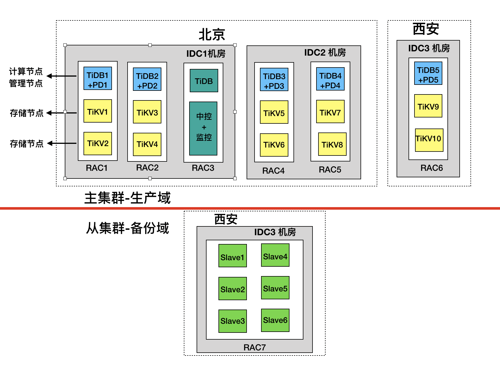

1. 部署架构
TiDB 分布式数据库两地三中心建设架构基于 Raft 算法，保证了集群数据一致性和高可用。两地是同城、异地，同城双中心指在同城或临近城市建立独立数据中心，双中心通过高速链路实时同步数据，网络延迟相对较小，另外一个数据中心在异地城市。在这种场景下，可以把业务流量同时派发到同城两个数据中心，通过控制 Region leader 和 PD leader 分布在同城两个数据中心。
1.1 架构图
以北京和西安为例阐述 TiDB 分布式数据库两地三中心架构部署模型，例中北京有两个机房 IDC1 和 IDC2，异地西安一个机房 IDC3。北京同城两机房之间网络延迟低于 3ms，北京与西安之间网络使用 ISP 专线，延迟约 20ms。
如下图 1 所示为集群部署架构图，具体如下：
- 部署采用主从架构，主集群作为生产集群，承担日常生产服务，从集群同通过 TiDB-Binlog 异步同步主集群数据库，作为备份数据库使用。
- 生产集群采用两地三中心，分别为北京 IDC1，北京 IDC2，西安 IDC3；
- 生产集群采用 5 副本模式，其中 IDC1 和 IDC2 分别放 2 个副本，IDC3 放 1 个副本；TiKV 按机柜打 Label，既每个机柜上有一份副本。
- 从集群与主机群直接通过 TiDB-Binlog 完成数据同步工作。

图 1 两地三中心集群架构图
该架构具备高可用和容灾备份能力，同时通过 PD 调度限制了 region leader 尽量只出现在同城的两个数据中心，这相比于三数据中心 region leader 分布不受限制的方案优势如下：
- 写入速度更优。
- 两中心同时提供服务资源利用率更高。
- 可保证任一数据中心失效后，服务可用并且不发生数据丢失。
因为是基于 Raft 算法，同城两个数据中心同时失效时，只有一个节点存在，不满足 Raft 算法大多数节点存在要求，最终将导致集群不可用及部分数据丢失，这种情况出现的概率是比较小的；另外由于使用到了网络专线，导致该架构成本较高。
1.2 部署说明
下面具体介绍两地三中心架构部署详情。

图2 两地三中心配置详图
北京、西安两地三中心配置详解：
- 如图 2 所示，北京有两个机房 IDC1 和 IDC2，机房 IDC1 中有三套机架 RAC1、RAC2、RAC3，机房 IDC2 有机架 RAC4、RAC5；西安机房 IDC3 有机架 RAC6、RAC7，其中机架 RAC7 中的服务器搭建了一套新的 TiDB 分布式数据库，作为灾备准实时同步主机群的数据，同时一些 T+1 的业务报表也放到这个集群中执行，避免影响主集群。
- 如图中 RAC1 机架所示，TiDB、PD 服务部署在同一台服务器上，还有两台 TiKV 服务器；每台 TiKV 服务器部署 2 个 TiKV 实例（tikv-server），即 TiKV 服务器上每块 PCIe SSD 上单独部署一个 TiKV 实例；RAC2、RAC4、RAC5、RAC6 类似。
- 机架 RAC3 上安放 TiDB-Server 及中控 + 监控服务器。部署 TiDB-Server，用于日常管理维护、备份使用。中控 + 监控服务器上部署 TiDB-Ansible、Prometheus，Grafana 以及恢复工具；
- 从集群采用混合部署方式，每台服务器上部署 2 个 TiKV 实例，其中的 3 台部署 TiDB 及 PD。
- 备份服务器上部署 Mydumper 及 Dranier ，Drainer 以输出 PB 文件的方式将增量数据保存到指定位置，实现增量备份的目的。
2. 两地三中心部署配置
2.1 inventory 配置模板
inventory.ini 配置模板信息
## TiDB Cluster Part
[tidb_servers]
TiDB-10 ansible_host=10.63.10.10 deploy_dir=/data/tidb_cluster/tidb
TiDB-11 ansible_host=10.63.10.11 deploy_dir=/data/tidb_cluster/tidb
TiDB-12 ansible_host=10.63.10.12 deploy_dir=/data/tidb_cluster/tidb
TiDB-13 ansible_host=10.63.10.13 deploy_dir=/data/tidb_cluster/tidb
TiDB-14 ansible_host=10.63.10.14 deploy_dir=/data/tidb_cluster/tidb
[tikv_servers]
TiKV-30 ansible_host=10.63.10.30 deploy_dir=/data/tidb_cluster/tikv tikv_port=20171 labels="dc=1,rack=1,zone=1,host=30"
TiKV-31 ansible_host=10.63.10.31 deploy_dir=/data/tidb_cluster/tikv tikv_port=20171 labels="dc=1,rack=2,zone=2,host=31"
TiKV-32 ansible_host=10.63.10.32 deploy_dir=/data/tidb_cluster/tikv tikv_port=20171 labels="dc=2,rack=3,zone=3,host=32"
TiKV-33 ansible_host=10.63.10.33 deploy_dir=/data/tidb_cluster/tikv tikv_port=20171 labels="dc=2,rack=4,zone=4,host=33"
TiKV-34 ansible_host=10.63.10.34 deploy_dir=/data/tidb_cluster/tikv tikv_port=20171 labels="dc=3,rack=5,zone=5,host=34"
[pd_servers]
PD-10 ansible_host=10.63.10.10 deploy_dir=/data/tidb_cluster/pd
PD-11 ansible_host=10.63.10.11 deploy_dir=/data/tidb_cluster/pd
PD-12 ansible_host=10.63.10.12 deploy_dir=/data/tidb_cluster/pd
PD-13 ansible_host=10.63.10.13 deploy_dir=/data/tidb_cluster/pd
PD-14 ansible_host=10.63.10.14 deploy_dir=/data/tidb_cluster/pd
[spark_master]
[spark_slaves]
[lightning_server]
[importer_server]
## Monitoring Part
# prometheus and pushgateway servers
[monitoring_servers]
proth-60 ansible_host=10.63.10.60 prometheus_port=8380 deploy_dir=/data/tidb_cluster/prometheus
[grafana_servers]
graf-60 ansible_host=10.63.10.60 grafana_port=8690 grafana_collector_port=8691 deploy_dir=/data/tidb_cluster/grafana
# node_exporter and blackbox_exporter servers
[monitored_servers]
10.63.10.10
10.63.10.11
10.63.10.12
10.63.10.13
10.63.10.14
10.63.10.30
10.63.10.31
10.63.10.32
10.63.10.33
10.63.10.34
[alertmanager_servers]
alertm ansible_host=10.63.10.60 deploy_dir=/data/tidb_cluster/alertmanager
[kafka_exporter_servers]
## Binlog Part
[pump_servers]
pump-10 ansible_host=10.63.10.10 deploy_dir=/data/tidb_cluster/pump
pump-11 ansible_host=10.63.10.11 deploy_dir=/data/tidb_cluster/pump
pump-12 ansible_host=10.63.10.12 deploy_dir=/data/tidb_cluster/pump
pump-13 ansible_host=10.63.10.13 deploy_dir=/data/tidb_cluster/pump
[drainer_servers]
## Group variables
[pd_servers:vars]
location_labels = ["dc","rack","zone","host"]
## Global variables
[all:vars]
deploy_dir = /data/tidb_cluster/tidb
## Connection
# ssh via normal user
ansible_user = tidb
cluster_name = test
tidb_version = v3.0.5
# process supervision, [systemd, supervise]
process_supervision = systemd
timezone = Asia/Shanghai
enable_firewalld = False
# check NTP service
enable_ntpd = False
set_hostname = False
## binlog trigger
enable_binlog = True
# kafka cluster address for monitoring, example:
# zookeeper address of kafka cluster for monitoring, example:
# zookeeper_addrs = "192.168.0.11:2181,192.168.0.12:2181,192.168.0.13:2181"
# enable TLS aut hentication in the TiDB cluster
enable_tls = False
# KV mode
deploy_without_tidb = False
# wait for region replication complete before start tidb-server.
wait_replication = True
# Optional: Set if you already have a alertmanager server.
# Format: alertmanager_host:alertmanager_port
alertmanager_target = ""
grafana_admin_user = ""
grafana_admin_password = ""
### Collect diagnosis
collect_log_recent_hours = 2
enable_bandwidth_limit = True
# default: 10Mb/s, unit: Kbit/s
collect_bandwidth_limit = 10000
2.2 inventory 配置详解
inventory.ini 作为部署 TiDB 集群的重要配置文件，在配置中建议对所有的组件进行别名设置，以方便使用 ansible-playbook 的 -l 参数操作单一组件的单一实例。
1.TiDB Servers
[tidb_servers]
TiDB-10 ansible_host=10.63.10.10 deploy_dir=/data/tidb_cluster/tidb
TiDB-11 ansible_host=10.63.10.11 deploy_dir=/data/tidb_cluster/tidb
2.TiKV Servers 设置基于 tikv 真实物理部署位置的 label 信息，方便 PD 进行全局管理和调度。
[tikv_servers]
TiKV-30 ansible_host=10.63.10.30 deploy_dir=/data/tidb_cluster/tikv1 tikv_port=20171 labels="dc=1,rack=1,zone=1,host=30"
TiKV-31 ansible_host=10.63.10.31 deploy_dir=/data/tidb_cluster/tikv1 tikv_port=20171 labels="dc=1,rack=2,zone=2,host=31"
3.PD 设置 为 PD 设置 TiKV 部署位置等级信息。
[pd_servers:vars]
location_labels = ["dc","rack","zone","host"]
2.3 Labels 设计
在两地三中心部署方式下，对于 Labels 的设计也需要充分考虑到系统的可用性和容灾能力，建议根据部署的物理结构来定义 DC、AZ、RACK、HOST 四个等级。

图3 label逻辑定义图
2.4 参数配置
在两地三中心的架构部署中，从性能优化的角度，建议对集群中相关组件参数进行调整。
- tikv.yml 中相关参数优化
文件路径：
+ block-cache-size
在 TiKV 单机多实例环境下，需要按照以下公式调整该值。
capacity = MEM_TOTAL * 0.5 / TiKV 实例数量 示例如下:
```
Storage:
block-cache:
capacity: “1G”
```
- 启用grpc消息压缩
由于涉及到集群中的数据在网络中传输，需要开启 gRPC 消息压缩，降低网络流量。
server: grpc-compression-type: gzip
- pd.yml 中相关参数优化
文件路径：
/tidb-ansible/conf/pd.yml 需要在集群安装前进行设置。
调整 PD balance 缓冲区大小，提高 PD 容忍度，因为 PD 会根据节点情况计算出各个对象的 score 作为调度的一句，当两个 store 的 leader 或 Region 的得分差距小于指定倍数的 Region size 时，PD 会认为此时 balance 达到均衡状态。
```
schedule:
tolerant-size-ratio: 20.0
```
- DC3 TiKV 网络优化
文件路径：
/tikv/conf/tikv.toml
修改此参数，拉长了异地副本参与选举的时间，尽量避免异地 TiKV 中的副本参与 raft 选举。建议在集群部署完毕后，为 DC3 的 TiKV 增加额外配置后重启 DC3 的TiKV。
```
raftstore:
raft-min-election-timeout-ticks= 1000
raft-max-election-timeout-ticks= 1020
```
调度设置 在集群启动后，通过 PD control 工具进行调度策略修改。
- 修改 TiKV raft 副本数
按照安装时规划好的副本数进行设置，在本例中为 5 副本。
config set max-replicas 5 禁止向异地机房调度 raft leader 当 raft leader 在异地数据中心时，会造成不必要的本地数据中心与异地数据中心间的网络消耗，同时由于网络带宽和延迟的影响，也会对 TiDB 的集群性能产生影响。需要禁用 raft leader 的调度。
config set label-property reject-leader dc dc3设置 PD 的优先级 为了避免出现异地数据中心的 PD 成为 leader，可以将本地数据中心的 PD 优先级调高(数字越大，优先级越高)，将异地的 PD 优先级调低。
member leader_priority PD-10 5 member leader_priority PD-11 5 member leader_priority PD-12 5 member leader_priority PD-13 5 member leader_priority PD-14 1
- 修改 TiKV raft 副本数
按照安装时规划好的副本数进行设置，在本例中为 5 副本。